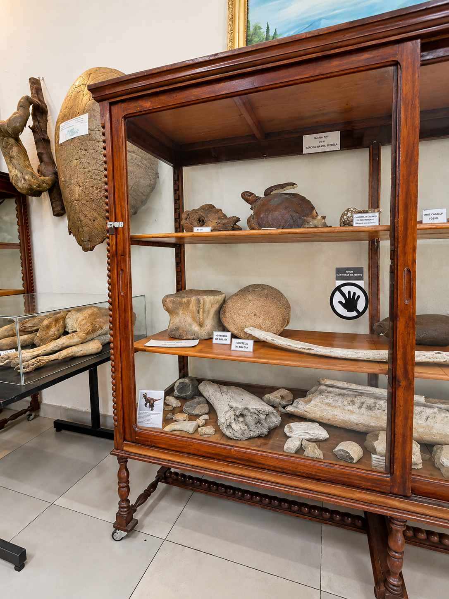

Cabra de duas cabeças
Uma das peças mais lembradas pelos visitantes e um convite à curiosidade.
Conhecer o tema →Conheça temas do acervo do Museu Municipal Jezualdo D’Oliveira e descubra fragmentos da história local.
Explorar o acervoConheça histórias, objetos e registros que ajudam a preservar a memória de Mirassol.
Uma das peças mais lembradas pelos visitantes e um convite à curiosidade.
Conhecer o tema →


Objetos, documentos e lembranças de pessoas ligadas a Mirassol.
Conhecer o tema →
O Museu Municipal Jezualdo D’Oliveira preserva parte da memória de Mirassol por meio de objetos históricos, fotografias, documentos e peças de história natural. Sua história institucional remonta a 1945; o espaço foi inaugurado por Jezualdo D’Oliveira em 8 de setembro de 1968.
O acervo reúne temas ligados à cidade, à cultura regional, à Segunda Guerra Mundial e à história natural, oferecendo diferentes formas de conhecer o passado.
Fontes: Cadastro Estadual de Museus de São Paulo e Prefeitura de Mirassol.